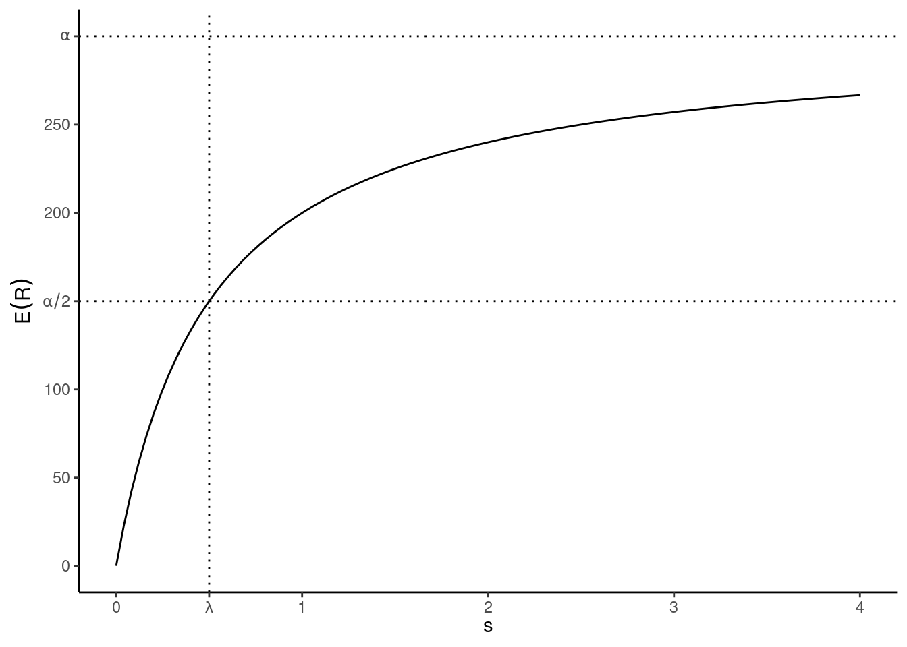
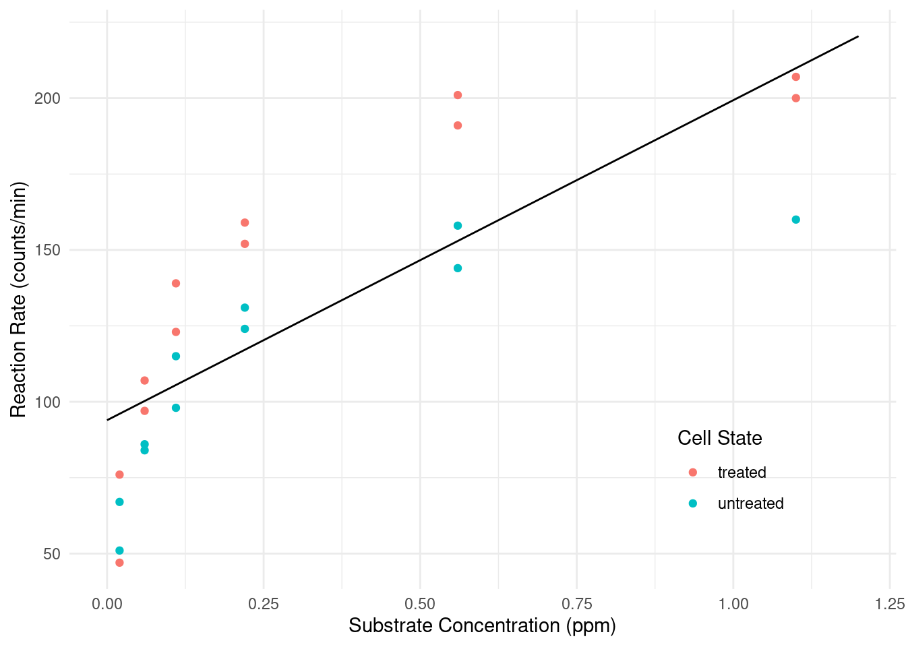
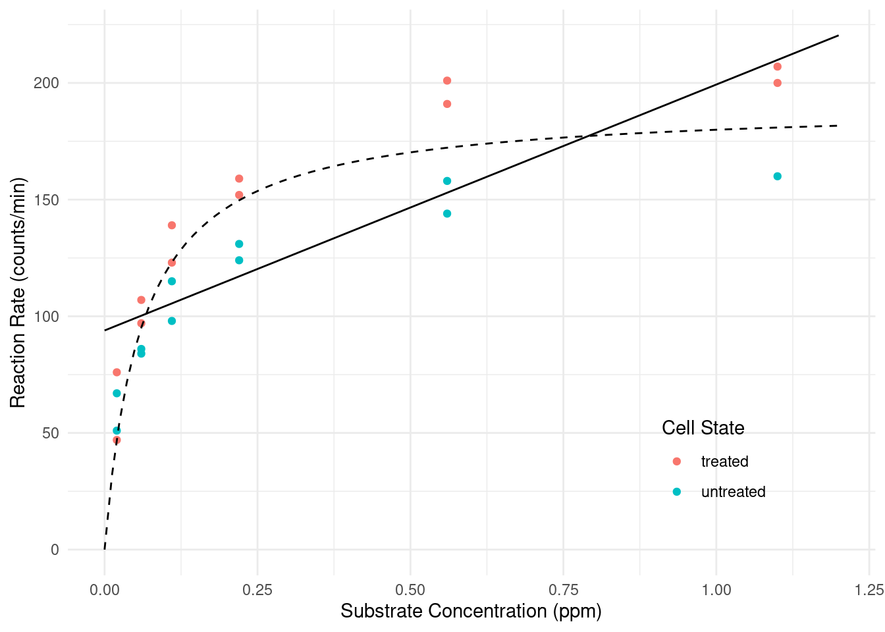
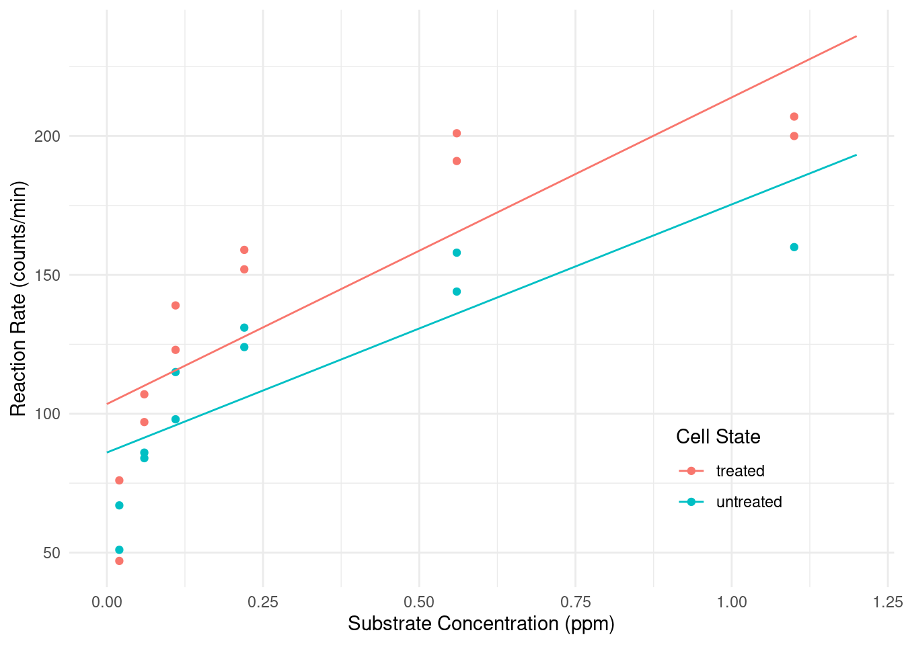
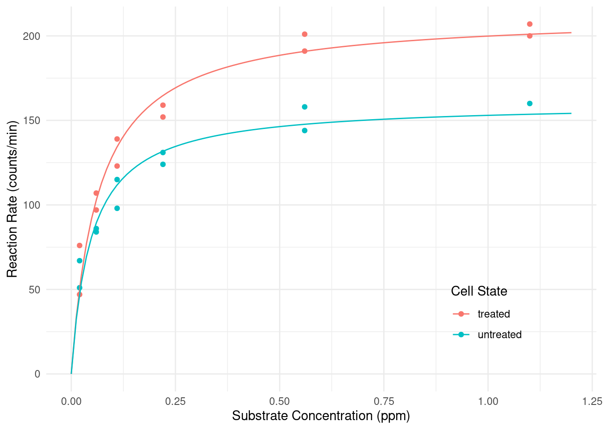
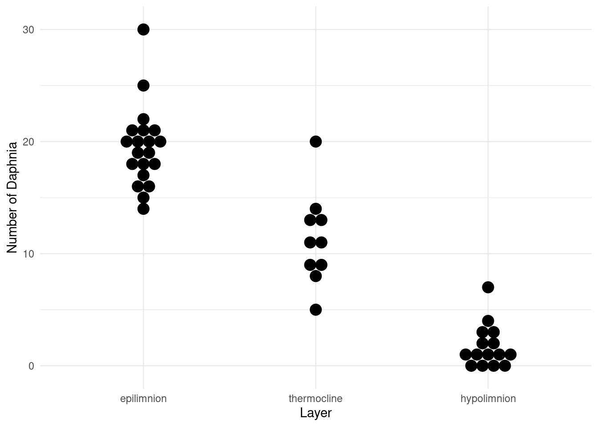
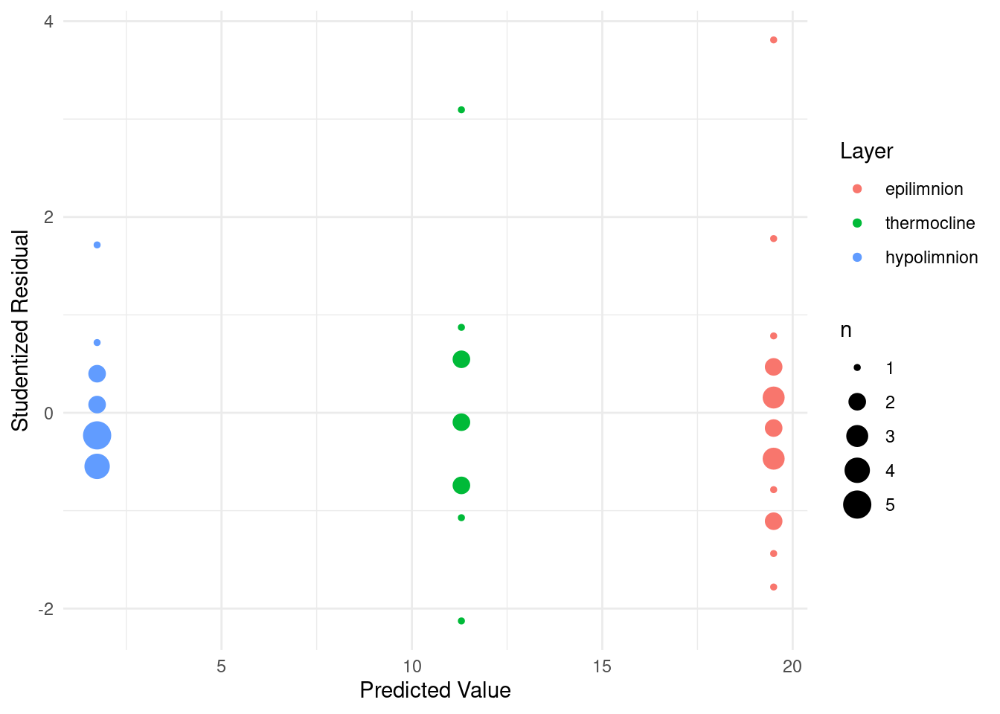

You can also download a PDF copy of this lecture.
The Michaelis-Menten model is perhaps the quintessential example of an application of nonlinear regression. It is from biochemistry and concerns the relationship between the (expected) rate of an enzymatic reaction to the concentration of an enzymatic substrate (i.e., the material of the reaction). As a nonlinear regression model the Michaelis-Menten model can be written as \[ E(R) = \frac{\alpha s}{\lambda + s}, \] where \(Y\) is the reaction rate and \(x\) is the substrate concentration.1
The two parameters of this model, \(\alpha\) and \(\lambda\), are interpretable in terms of
the relationship between the expected reaction rate and substrate
concentration. The \(\alpha\) parameter
is the maximum expected reaction rate (i.e., the upper asymptote as
\(s \rightarrow \infty\)), and \(\lambda\) is the value of \(x\) at which the reaction rate is half of
\(\alpha\) (i.e., a “half-life”
parameter) so smaller values of \(\lambda\) mean that the curve is
approaching \(\alpha\) “faster” as
\(s\) increases.2 Note also that if
\(s = 0\) then \(E(R) = 0\) so the curve is constrained to
have an “intercept” of zero, which makes sense in the context of enzyme
kinetics. The plot below shows an example of the model where \(\alpha\) = 300 and \(\lambda\) = 0.5.

To estimate \(\alpha\) and \(\lambda\) the typical method is to conduct
a series of assays, varying substrate concentration and recording the
reaction rate at each concentration, and then using nonlinear regression
to estimate \(\alpha\) and \(\lambda\). In the following problems you
will be using data in the data frame Puromycin. It is
included with R so there is no package to load. These data are from a
study that observed reaction rates at several substrate concentrations,
but also for cells that were treated with puromycin (an antibiotic).
Before starting you can familiarize yourself with the data by simply
typing Puromycin at the console prompt (it is not a large
data set).
To get started we will first ignore the experimental manipulation
of treated cells with puromycin. The R code below will estimate the
linear model \(E(R_i) = \beta_0 +
\beta_1 s_i\) using nls and plot this model with the
data.
library(ggplot2)
m <- nls(rate ~ b0 + b1 * conc, start = c(b0 = 0, b1 = 0), data = Puromycin)
d <- expand.grid(conc = seq(0, 1.2, length = 100), state = c("treated","untreated"))
d$yhat <- predict(m, newdata = d)
p <- ggplot(Puromycin, aes(x = conc, y = rate)) +
geom_point(aes(color = state)) + geom_line(aes(y = yhat), data = d) +
labs(x = "Substrate Concentration (ppm)",
y = "Reaction Rate (counts/min)", color = "Cell State") +
theme_minimal() + theme(legend.position = c(0.8,0.2))
plot(p) Clearly the linear model is not a good model for the data. Cut-and-paste the R code above and modify it to replace the linear model with the Michaelis-Menten model (ignoring the experimental manipulation for now). To specify starting values for \(\alpha\) and \(\lambda\), look at the plot of the data and try to guess their approximate values. Remember that \(\alpha\) is the asymptote and \(\lambda\) is the concentration at which the (expected) reaction rate is half way between zero and the asymptote.
Solution: We might estimate the nonlinear model as follows, using the figure to guess starting values for \(\alpha\) and \(\lambda\).
m <- nls(rate ~ alpha * conc / (lambda + conc), data = Puromycin,
start = list(alpha = 200, lambda = 0.1))
cbind(summary(m)$coefficients, confint(m)) Estimate Std. Error t value Pr(>|t|) 2.5% 97.5%
alpha 190.80620 8.76458 21.770 6.835e-16 172.68402 210.97021
lambda 0.06039 0.01077 5.608 1.449e-05 0.03981 0.08881We can plot the model as follows by “adding” to the code above.
d <- data.frame(conc = seq(0, 1.2, length = 100))
d$yhat <- predict(m, newdata = d)
p <- p + geom_line(aes(y = yhat), data = d, linetype = 2)
plot(p)
Now consider a linear model that will assume a linear relationship between reaction rate and concentration that is different for treated versus untreated cells (i.e., an “interaction” between substrate concentration and cell state).
m <- lm(rate ~ state + conc + conc:state, data = Puromycin)
cbind(summary(m)$coefficients, confint(m)) Estimate Std. Error t value Pr(>|t|) 2.5 % 97.5 %
(Intercept) 103.49 10.53 9.832 6.914e-09 81.46 125.52
stateuntreated -17.45 15.06 -1.158 2.611e-01 -48.98 14.08
conc 110.42 20.46 5.397 3.301e-05 67.60 153.24
stateuntreated:conc -21.08 32.69 -0.645 5.266e-01 -89.50 47.33From summary we can see that the model can be written as
\[
E(R_i) = \beta_0 + \beta_1 u_i + \beta_2 s_i + \beta_3 u_i s_i,
\] where \(s_i\) represents
concentration (conc) and \(u_i\) is an indicator variable for when the
treatment (state) is “untreated” so that \[
u_i =
\begin{cases}
1, & \text{if the $i$-th observation is of untreated cells}, \\
0, & \text{otherwise}.
\end{cases}
\] This model can be written case-wise as \[
E(R_i) =
\begin{cases}
\beta_0 + \beta_2 s_i, & \text{if the $i$-th observation is of
treated cells,} \\
\beta_0 + \beta_1 + (\beta_2 + \beta_3) s_i,& \text{if the $i$-th
observation is of untreated cells.}
\end{cases}
\] We can replicate this model using the nls
function by specifying an indicator variable in the model formula.
m <- nls(rate ~ b0 + b1*(state == "untreated") +
b2*conc + b3*(state == "untreated")*conc,
data = Puromycin, start = list(b0 = 0, b1 = 0, b2 = 0, b3 = 0))
summary(m)$coefficients Estimate Std. Error t value Pr(>|t|)
b0 103.49 10.53 9.832 6.914e-09
b1 -17.45 15.06 -1.158 2.611e-01
b2 110.42 20.46 5.397 3.301e-05
b3 -21.08 32.69 -0.645 5.266e-01d <- expand.grid(conc = seq(0, 1.2, length = 100), state = c("treated","untreated"))
d$yhat <- predict(m, newdata = d)
p <- ggplot(Puromycin, aes(x = conc, y = rate, color = state)) +
geom_point() + geom_line(aes(y = yhat), data = d) +
labs(x = "Substrate Concentration (ppm)",
y = "Reaction Rate (counts/min)", color = "Cell State") +
theme_minimal() + theme(legend.position = c(0.8,0.2))
plot(p)
Since there are only two levels of state we could also use
the ifelse function to produce the same results as using
the indicator variable.
m <- nls(rate ~ ifelse(state == "treated", b0 + b2*conc, b0 + b1 + (b2 + b3)*conc),
data = Puromycin, start = list(b0 = 0, b1 = 0, b2 = 0, b3 = 0))
summary(m)$coefficients Estimate Std. Error t value Pr(>|t|)
b0 103.49 10.53 9.832 6.914e-09
b1 -17.45 15.06 -1.158 2.611e-01
b2 110.42 20.46 5.397 3.301e-05
b3 -21.08 32.69 -0.645 5.266e-01We can also use the case_when function from the
dplyr package.
library(dplyr)
m <- nls(rate ~ case_when(
state == "treated" ~ b0 + b2*conc,
state == "untreated" ~ b0 + b1 + (b2 + b3)*conc,
), data = Puromycin, start = list(b0 = 0, b1 = 0, b2 = 0, b3 = 0))
summary(m)$coefficients Estimate Std. Error t value Pr(>|t|)
b0 103.49 10.53 9.832 6.914e-09
b1 -17.45 15.06 -1.158 2.611e-01
b2 110.42 20.46 5.397 3.301e-05
b3 -21.08 32.69 -0.645 5.266e-01Obviously this is a poor model for the Puromycin data
since expected reaction rate does not appear to be a linear function of
substrate concentration. Instead we would like to have a model where
there the Michaelis-Menten model describes the relationship between the
expected reaction rate and substrate concentration, but differently
for each state so that the \(\alpha\) and \(\lambda\) parameters can depend on the
state. Estimate this model using the nls function, noting
that there are many different ways that this model could be
parameterized. Plot the model as well with the raw data.
Solution: Here is one way we might specify such a model.
m1 <- nls(rate ~ ifelse(state == "treated", alphat * conc / (lambdat + conc),
alphau * conc / (lambdau + conc)), data = Puromycin,
start = list(alphat = 200, lambdat = 0.1, alphau = 200, lambdau = 0.1))
cbind(summary(m1)$coefficients, confint(m1)) Estimate Std. Error t value Pr(>|t|) 2.5% 97.5%
alphat 212.68373 6.608094 32.185 4.876e-18 198.88883 227.45563
lambdat 0.06412 0.007877 8.141 1.293e-07 0.04856 0.08354
alphau 160.28001 6.896011 23.242 2.041e-15 145.85285 176.28021
lambdau 0.04771 0.008281 5.761 1.496e-05 0.03159 0.06966This model can be written as \[ E(Y_i) = \begin{cases} \alpha_t s_i/(\lambda_t + s_i), & \text{if the $i$-th observation is of treated cells}, \\ \alpha_u s_i/(\lambda_u + s_i), & \text{if the $i$-th observation is of untreated cells}. \end{cases} \] An alternative paramterization that includes a parameter for the “effect” of treating the cells is \[ E(Y_i) = \begin{cases} (\alpha + \delta_{\alpha})s_i/(\lambda + \delta_{\lambda} + s_i), & \text{if the $i$-th observation is of treated cells}, \\ \alpha s_i/(\lambda + s_i), & \text{if the $i$-th observation is of untreated cells}. \end{cases} \] Note that we can establish a relationship between the parameters in the two models: \(\alpha = \alpha_u\), \(\lambda = \lambda_u\), \(\delta_{\alpha} = \alpha_t - \alpha_u\) and \(\delta_{\lambda} = \lambda_t - \lambda_u\). This latter model can be estimated as follows.
m2 <- nls(rate ~ ifelse(state == "treated",
(alpha + deltaa) * conc / (lambda + deltal + conc),
alpha * conc / (lambda + conc)), data = Puromycin,
start = list(alpha = 200, lambda = 0.1, deltaa = 0, deltal = 0))
cbind(summary(m2)$coefficients, confint(m2)) Estimate Std. Error t value Pr(>|t|) 2.5% 97.5%
alpha 160.28001 6.896011 23.242 2.041e-15 145.85285 176.28021
lambda 0.04771 0.008281 5.761 1.496e-05 0.03159 0.06966
deltaa 52.40373 9.551014 5.487 2.713e-05 31.33677 73.09295
deltal 0.01641 0.011429 1.436 1.672e-01 -0.01043 0.04187There are several other ways we might parameterize the model and
specify it in nls. But for plotting purposes the
parameterization does not matter.
d <- expand.grid(conc = seq(0, 1.2, length = 100), state = c("treated","untreated"))
d$yhat <- predict(m1, newdata = d)
p <- ggplot(Puromycin, aes(x = conc, y = rate, color = state)) +
geom_point() + geom_line(aes(y = yhat), data = d) +
labs(x = "Substrate Concentration (ppm)",
y = "Reaction Rate (counts/min)") +
labs(color = "Cell State") +
theme_minimal() + theme(legend.position = c(0.8,0.2))
plot(p)
There are several potentially useful inferences we might make
here. One is the values of the two parameters for the Michaelis-Menten
model for each state. Another is the difference in the
parameters between states. Depending on how the model was
parameterized in the previous question, some of these could be found
simply by using summary and confint, while
others might require using lincon unless the model is
reparameterized. Produce estimates, standard errors, and confidence
intervals for the six quantities described above.
Solution: First consider inferences for the two parameters of the Micahelis-Menten model for each treatment condition. These are the parameters of the first parameterization used above.
cbind(summary(m1)$coefficients, confint(m1)) Estimate Std. Error t value Pr(>|t|) 2.5% 97.5%
alphat 212.68373 6.608094 32.185 4.876e-18 198.88883 227.45563
lambdat 0.06412 0.007877 8.141 1.293e-07 0.04856 0.08354
alphau 160.28001 6.896011 23.242 2.041e-15 145.85285 176.28021
lambdau 0.04771 0.008281 5.761 1.496e-05 0.03159 0.06966If we were using the second parameterization, we could obtain
estimates of the parameters from the untreated cells from
summary and confint, but would have to use
something like lincon to to estimate a function of the
model parameters. Recall the relationships between the parameters in the
two models: \(\alpha = \alpha_u\),
\(\lambda = \lambda_u\), \(\delta_{\alpha} = \alpha_t - \alpha_u\) and
\(\delta_{\lambda} = \lambda_t -
\lambda_u\). Thus \(\alpha_t = \alpha +
\delta_{\alpha}\) and \(\lambda_t =
\lambda + \delta_{\lambda}\).
library(trtools)
cbind(summary(m2)$coefficients, confint(m2)) Estimate Std. Error t value Pr(>|t|) 2.5% 97.5%
alpha 160.28001 6.896011 23.242 2.041e-15 145.85285 176.28021
lambda 0.04771 0.008281 5.761 1.496e-05 0.03159 0.06966
deltaa 52.40373 9.551014 5.487 2.713e-05 31.33677 73.09295
deltal 0.01641 0.011429 1.436 1.672e-01 -0.01043 0.04187lincon(m2, a = c(1, 0, 1, 0)) # lambdat estimate se lower upper tvalue df pvalue
(1,0,1,0),0 212.7 6.608 198.9 226.5 32.19 19 4.876e-18lincon(m2, a = c(0, 1, 0, 1)) # lambdat estimate se lower upper tvalue df pvalue
(0,1,0,1),0 0.06412 0.007877 0.04763 0.08061 8.141 19 1.293e-07Now if we want to estimate the difference in the parameters of the Michaelis-Menten model between the treated and untreated states, we could get that from the second parameterization because those differences are \(\delta_{\alpha}\) and \(\delta_{\lambda}\).
cbind(summary(m2)$coefficients, confint(m2)) Estimate Std. Error t value Pr(>|t|) 2.5% 97.5%
alpha 160.28001 6.896011 23.242 2.041e-15 145.85285 176.28021
lambda 0.04771 0.008281 5.761 1.496e-05 0.03159 0.06966
deltaa 52.40373 9.551014 5.487 2.713e-05 31.33677 73.09295
deltal 0.01641 0.011429 1.436 1.672e-01 -0.01043 0.04187But if we were using the first parameterization we would again need
to use something like lincon since \(\delta_{\alpha} = \alpha_t - \alpha_u\) and
\(\delta_{\lambda} = \lambda_t -
\lambda_u\).
lincon(m1, a = c(1,0,-1,0)) # delta_alpha estimate se lower upper tvalue df pvalue
(1,0,-1,0),0 52.4 9.551 32.41 72.39 5.487 19 2.713e-05lincon(m1, a = c(0,1,0,-1)) # delta_lambda estimate se lower upper tvalue df pvalue
(0,1,0,-1),0 0.01641 0.01143 -0.007508 0.04033 1.436 19 0.1672Note that when estimating the same quantity we obtain the same
estimates and standard errors from either parameterization from
summary and lincon. The confidence intervals,
however, are slightly different because confint and
lincon use different methods of obtaining approximate
confidence intervals.
The data frame daphniastrat from the
trtools package features data from a survey of water
fleas where the number of water fleas were counted in one liter samples
of water taken from three different layers of a lake.
library(trtools) # for daphniastrat
library(ggplot2)
p <- ggplot(daphniastrat, aes(x = layer, y = count)) +
geom_dotplot(binaxis = "y", binwidth = 1, stackdir = "center") +
labs(x = "Layer", y = "Number of Daphnia") + theme_minimal()
plot(p) We used the following linear model for these data.
m <- lm(count ~ layer, data = daphniastrat)
summary(m)$coefficients Estimate Std. Error t value Pr(>|t|)
(Intercept) 19.50 0.7271 26.820 4.727e-28
layerthermocline -8.20 1.2593 -6.512 7.293e-08
layerhypolimnion -17.77 1.1106 -15.997 1.784e-19But heteroscedasticity is evident in the plot of the raw data above and also in a plot of the studentized residuals.
daphniastrat$yhat <- predict(m)
daphniastrat$rest <- rstudent(m)
p <- ggplot(daphniastrat, aes(x = yhat, y = rest, color = layer)) +
geom_count() + theme_minimal() +
labs(x = "Predicted Value", y = "Studentized Residual", color = "Layer")
plot(p)
Note that geom_count is a variant of
geom_point that makes the point size proportional to the
number of points at a particular position, which is useful here.
Heteroscedasticty is quite common when the response variable is a count. Typically the variance of the counts increases with the expected count. Here we will consider a couple of ways of dealing with this heteroscedasticty.
We might assume that the variance varies by layer with the
expected count, so that \[
\text{Var}(Y_i) =
\begin{cases}
\sigma_e^2, & \text{if the $i$-th observation is from the epilimnion
layer}, \\
\sigma_t^2, & \text{if the $i$-th observation is from the
thermocline layer}, \\
\sigma_h^2, & \text{if the $i$-th observation is from the
hypolimnion layer}.
\end{cases}
\] If so, then our weights should be specified such that \[
w_i \propto
\begin{cases}
1/\sigma_e^2, & \text{if the $i$-th observation is from the
epilimnion layer}, \\
1/\sigma_t^2, & \text{if the $i$-th observation is from the
thermocline layer}, \\
1/\sigma_h^2, & \text{if the $i$-th observation is from the
hypolimnion layer}.
\end{cases}
\] We do not know \(\sigma_e^2\), \(\sigma_t^2\), and \(\sigma_h^2\), but they could be
estimated using the sample variances \(s_e^2\), \(s_t^2\), and \(s_h^2\), respectively, which we can easily
compute since we have multiple observations from each layer. Estimate
the model using weighted least squares with weights computed as
described above. The sample standard deviations can be computed and used
to add weights to the data frame using functions from the
dplyr package as demonstrated with the
CancerSurvival data in lecture on February 17th.
Solution: First we compute the weights using functions from the dplyr package.
library(dplyr)
daphniastrat <- daphniastrat %>% group_by(layer) %>% mutate(w = 1 / var(count))Then we estimate the model using weighted least squares.
m <- lm(count ~ layer, data = daphniastrat, weights = w)
summary(m)$coefficients Estimate Std. Error t value Pr(>|t|)
(Intercept) 19.50 0.7997 24.385 2.035e-26
layerthermocline -8.20 1.5190 -5.398 2.896e-06
layerhypolimnion -17.77 0.9392 -18.918 3.617e-22Assuming again that the variance of the counts vary by layer so
that \[
\text{Var}(Y_i) =
\begin{cases}
\sigma_e^2, & \text{if the $i$-th observation is from the epilimnion
layer}, \\
\sigma_t^2, & \text{if the $i$-th observation is from the
thermocline layer}, \\
\sigma_h^2, & \text{if the $i$-th observation is from the
hypolimnion layer},
\end{cases}
\] another approach would be to use a parametric model
that estimates the usual parameters of the regression model (i.e., \(\beta_0\), \(\beta_1\), and \(\beta_3\)) and the three variances above
simultaneously. Do this using the gls function
from the nlme package as demonstrated in lecture on February 22nd.
Solution: Here is how we would estimate this model.
library(nlme) # for gls function
m <- gls(count ~ layer, data = daphniastrat,
weights = varIdent(form = ~ 1 | layer), method = "ML")
summary(m)Generalized least squares fit by maximum likelihood
Model: count ~ layer
Data: daphniastrat
AIC BIC logLik
235.1 245.9 -111.5
Variance function:
Structure: Different standard deviations per stratum
Formula: ~1 | layer
Parameter estimates:
epilimnion thermocline hypolimnion
1.0000 1.1115 0.5286
Coefficients:
Value Std.Error t-value p-value
(Intercept) 19.50 0.8068 24.170 0
layerthermocline -8.20 1.5030 -5.456 0
layerhypolimnion -17.77 0.9452 -18.796 0
Correlation:
(Intr) lyrthr
layerthermocline -0.537
layerhypolimnion -0.854 0.458
Standardized residuals:
Min Q1 Med Q3 Max
-1.6261 -0.5937 -0.1434 0.4303 3.0123
Residual standard error: 3.486
Degrees of freedom: 45 total; 42 residualThe model above was estimated using maximum likelihood (ML). But another method is to use what is called restricted maximum likelihood (REML) which is the default method. It is interesting to note that for this model, this REML effectively equivalent to the approach used in the previous problem.
library(nlme) # for gls function
m <- gls(count ~ layer, data = daphniastrat,
weights = varIdent(form = ~ 1 | layer), method = "ML")
summary(m)Generalized least squares fit by maximum likelihood
Model: count ~ layer
Data: daphniastrat
AIC BIC logLik
235.1 245.9 -111.5
Variance function:
Structure: Different standard deviations per stratum
Formula: ~1 | layer
Parameter estimates:
epilimnion thermocline hypolimnion
1.0000 1.1115 0.5286
Coefficients:
Value Std.Error t-value p-value
(Intercept) 19.50 0.8068 24.170 0
layerthermocline -8.20 1.5030 -5.456 0
layerhypolimnion -17.77 0.9452 -18.796 0
Correlation:
(Intr) lyrthr
layerthermocline -0.537
layerhypolimnion -0.854 0.458
Standardized residuals:
Min Q1 Med Q3 Max
-1.6261 -0.5937 -0.1434 0.4303 3.0123
Residual standard error: 3.486
Degrees of freedom: 45 total; 42 residualWe will discuss maximum likelihood and perhaps restricted maximum likelihood later in the course.
With counts it is often assumed that the variance is proportional to the expected response — i.e., \(\text{Var}(Y_i) \propto E(Y_i)\). Assuming that is true here, estimate the model using iteratively weighted least squares as was demonstrated in lecture on February 22nd.
Solution: We can program the iteratively weighted least squares algorithm as follows.
daphniastrat$w <- 1
for (i in 1:5) {
m <- lm(count ~ layer, data = daphniastrat, weights = w)
daphniastrat$w <- 1 / predict(m)
}
summary(m)
Call:
lm(formula = count ~ layer, data = daphniastrat, weights = w)
Weighted Residuals:
Min 1Q Median 3Q Max
-1.874 -0.684 -0.113 0.340 4.000
Coefficients:
Estimate Std. Error t value Pr(>|t|)
(Intercept) 19.50 1.13 17.24 < 2e-16 ***
layerthermocline -8.20 1.66 -4.93 1.3e-05 ***
layerhypolimnion -17.77 1.20 -14.85 < 2e-16 ***
---
Signif. codes: 0 '***' 0.001 '**' 0.01 '*' 0.05 '.' 0.1 ' ' 1
Residual standard error: 1.15 on 42 degrees of freedom
Multiple R-squared: 0.86, Adjusted R-squared: 0.853
F-statistic: 128 on 2 and 42 DF, p-value: <2e-16Note how the estimates do not change. For this particular model the algorithm only needs to go through one iteration to compute the weights. This is because the predicted values do not depend on the weights in this particular model.
See the Wikipedia entry on Michaelis-Menten for details if you are interested. A related model is the Beverton-Holt population dynamics model that is frequently used in fisheries research.↩︎
The interpretation of \(\alpha\) can be seen by taking the limit of \(\alpha s/(\lambda + s)\) as \(s \rightarrow \infty\), and the interpretation of \(\lambda\) can be shown by replacing \(s\) with \(\lambda\) in \(\alpha s/(\lambda + s)\) which gives \(\alpha/2\).↩︎